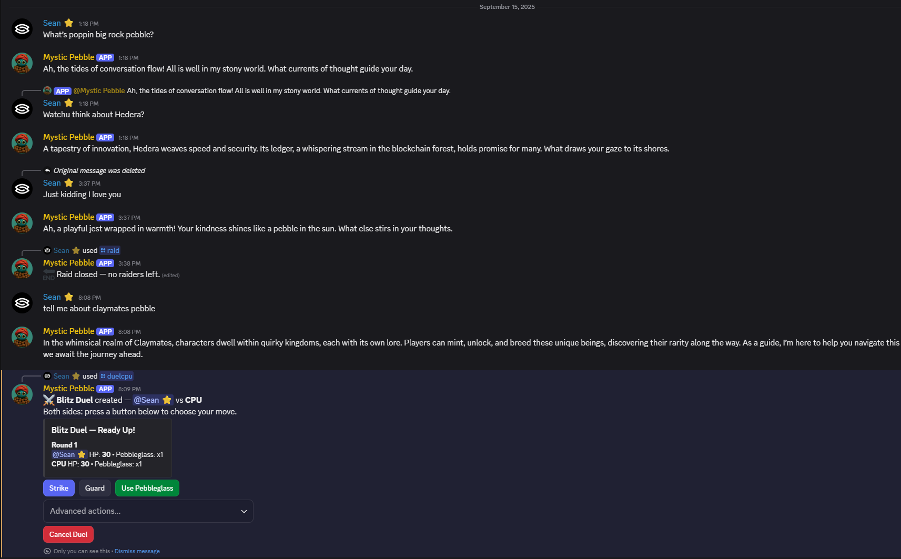

Mystic Pebble Discord Bot

To create a more engaging community I created an AI powered chat bot for my Claymates Discord server.
Just mention his name or reply to him and he will give a wise and often riddle like reply. He also runs duels where players battle
head to head in rock-paper-scissors like gameplay or raids where users group up to take down deadly foes with their own quirks.
His cost to run is 100% free with 24 hour uptime using the free tier of Render, Open AI gpt-4o-mini and Cloudflare to ping Render.
Tech used: Node, Cloudflare Worker/Storage, Render Webservice, Open AI gpt-4o-mini.